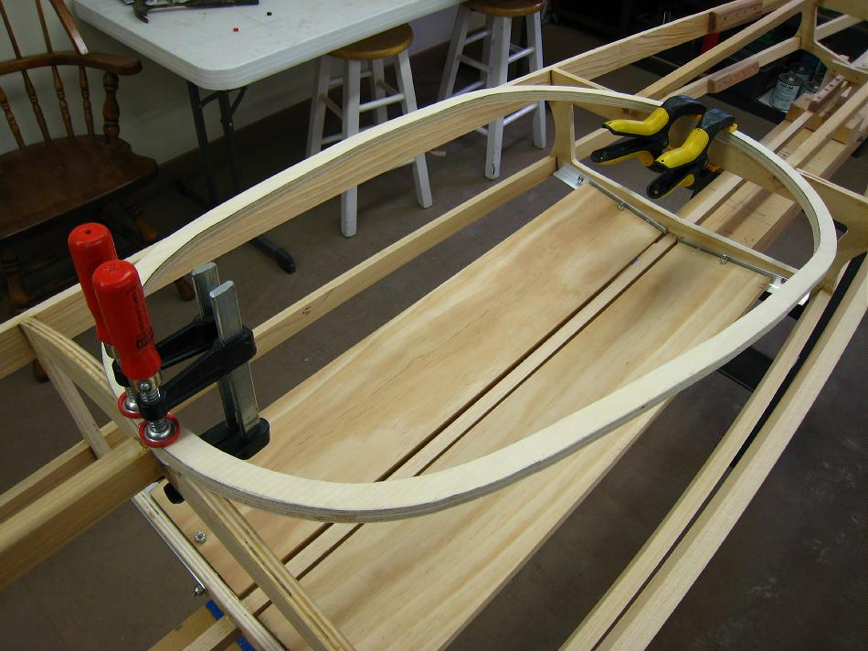

| Coaming | Menu Last Page Next Page |
|

While the coaming epoxy cures, glue the 3/4" X 1/2" coaming base plate to cross sections 2 and 3 on the Sea Bee. On the Sea Rider and Nikumi use sections 4 and 5. File the top of section 2 to insure a flat surface for gluing. After applying the T-88 or West Systems epoxy, clamp the base plate at sections 2 and 3 and allow the epoxy to cure overnight. A medium set (15 minute) epoxy could be used for this small application.
|
|